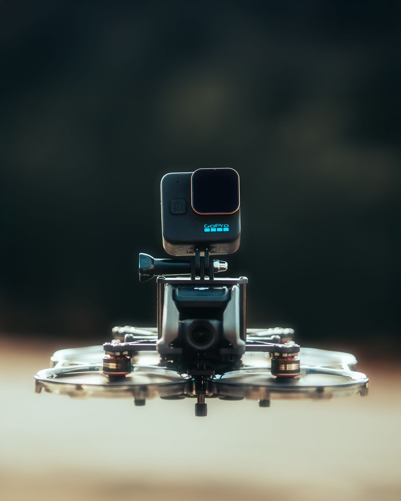

Three files, told the way they were flown: the brief, the decisions, the outcome — with the crashes and the scrubbed days left in. If a result isn’t on a timing sheet, it isn’t on this page.
File 01 — Racing · Alpine Rotor League, 2025 season
The title, decided in the last main
The brief. Win the 2025 Alpine Rotor League — or lose it honestly. I arrived at the Verona final 11 points behind the championship leader after a season of 8 rounds, 96 heats and 9 broken frames. The maths was simple and printed on the paddock board: win both mains at Verona, and the title was mine on countback of wins.
The decisions. Qualifying was flown on the conservative quad — the one with the older, softer tune — because a qualifying crash costs more than a qualifying tenth. Six fresh 4S 1300 packs were held back, unflown, for the two mains; the Pack Budget Tool on Lap 01 is this arithmetic, exactly. After Q2 the prop pitch went up one step: the sheet said the course’s long back straight was worth more than the tight infield cost.
The outcome. Main 1 won by 1.9 seconds. Main 2 won with the fastest lap of the day, 29.8 seconds, on lap 3 — the full final-main sheet is printed below. Champion by 4 points. The season’s worst day is in this file too, because it belongs here: at Round 7, Main 2, I clipped gate 9 on lap 2, wrote the frame off against a pylon, and finished the round 4th. That crash is the reason the Verona maths was tight — and the reason the crash budget on the home page counts frames in the open.
Timing sheet — Final Main 2, Verona, 12 Oct 2025 · 5″ open class
Lap
Time
Sheet note
LAP 1
31.2
Start from P2, took the lead at gate 4
LAP 2
30.4
Clean infield, pack voltage holding
LAP 3
29.8
Fastest lap of the day — back straight on the new pitch
LAP 4
30.1
Traffic at gate 9, line held
LAP 5
30.6
Pack sagging, reserve respected — no extra lap attempted
LAP 6
30.9
Finish — P1, title on countback confirmed at the tower
EventARL Final, Round 8
Date11 – 12 Oct 2025
VenueVerona, IT
Result1st — league champion
File 02 — Coaching · Milan Drone Club junior programme
First gates to qualifying pace in ten weeks
The brief. A 15-year-old club pilot, flying since she was twelve, with a best lap of 58.4 seconds on the club course. The league’s junior qualifying standard is 40.0 seconds. Her club asked for a block of coaching days with one measure of success: the standard, met on a sheet, at a real round.
The decisions. No new parts — her quad was legal, balanced and boring, which is what a learning quad should be. The work was line choice before throttle: walk the course, name the braking points, then fly them at 70% until the line was automatic. Every pack ended with DVR review at the bench, and every day ended with the day’s best three laps written on the sheet where she could watch them fall.
The outcome. 58.4 → 38.9 seconds in ten weeks, on the same quad, and a 12th-place qualification at her first league round in November. The month-by-month sheet is below. The honest line in this file is what didn’t happen: she did not get faster by flying more packs per day — she got faster by reviewing fewer of them properly.
Progress sheet — club course, best lap of the day, same quad throughout
Month
Best lap
What changed
AUG 2025
58.4 s
Baseline — first timed sheet, braking everywhere
SEP 2025
47.2 s
Braking points named and walked; throttle capped at 70%
OCT 2025
41.5 s
Full throttle restored on the learned line; DVR review each pack
NOV 2025
38.9 s
Standard met — qualified P12 at her first league round
“Dario coached the lap, not the shopping list. In ten weeks our junior went from 58 seconds to qualifying pace, and the only thing he let us buy was more gates.”
ClientClub junior programme
Format8 coaching days
WindowAug – Nov 2025
Standard≤ 40.0 s — met, 38.9 s
File 03 — Freestyle film · Alpine hotel group
One take, three days, two of them scrubbed
The brief. A hotel group in the Dolomites wanted a single continuous FPV shot — down the valley, along the terrace, through the lobby doors — from which their editors would cut a 30-second brand film. One take, no stitches: the moment a cut hides a join, it stops being the shot they were paying for.
The decisions. The 7″ cinematic quad, not the 5″ — slower, heavier, and steady at walking pace. The route was walked on foot, then flown at walking pace, then flown at speed, in that order, across a full rehearsal morning. A wind limit of 6 m/s was agreed in writing before day 1, with the scrub rule attached: above the limit, nobody argues, the day moves.
The outcome. Fourteen takes are on the log. Days 1 and 2 were scrubbed by gusts of 8–11 m/s — charged as weather days under the printed rule, rebooked once free, and logged here rather than quietly dropped from the file. Take 14, on day 3 at 3 m/s, ran 3 minutes 12 seconds valley-to-lobby without a cut, and the client’s 30 seconds come from its middle. The deliverable was one take; the file shows the thirteen that paid for it.

Fig. 02 — A camera quad in flight. Reference photograph by UMUT RAW via Pexels; not the commission’s quad, route or hotel.
ClientAlpine hotel group*
LocationDolomites, IT
Format3 film days, 14 takes
Deliverable1 uncut take · 3:12
*Client name withheld under the commission’s terms; the take log and the scrub record are available to future film clients on request.